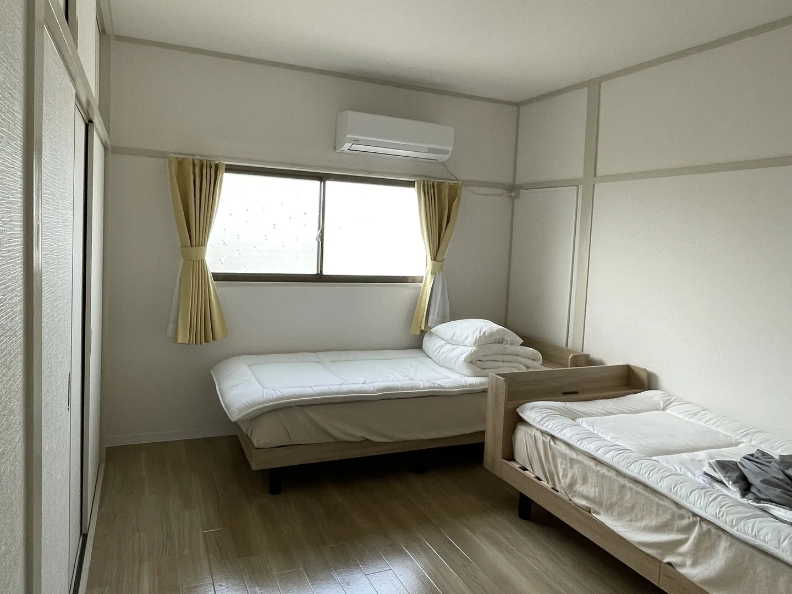
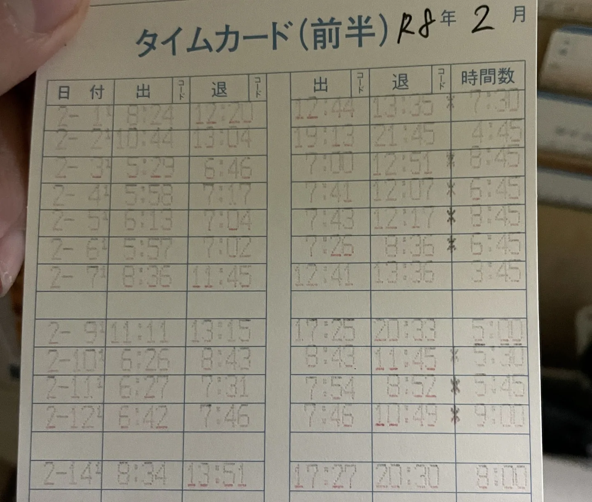
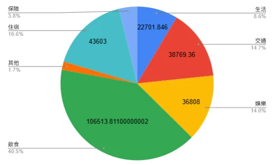

A Working Holiday Year in Japan: Preparation, Costs, and a Life That Isn't Mostly Working

From mid-June 2025 to mid-June 2026, I was on a working holiday in Japan, and I stayed the whole year.
Before leaving, my one wish was to try skiing while working, and beyond that, to experience whatever I hadn't done before, as long as the travel distance wasn't too crazy.
There are already plenty of posts online about the preparation process. What I want to share here is what I actually spent, how my time split between work and play, and a few lessons learned, for people still deciding whether to go (worried about money), and for people who've decided but don't know where to start.
A working holiday: is it a "holiday" or "work"?
The purpose of the visa is mainly a "holiday", and it allows you to work to top up your travel funds and support your life.
But in most of the posts I've read from people who did it, something like 80 to 90% of the time was spent working, and they only traveled on days off, between two jobs, or right before going home.
Working in Japan also really only covers everyday costs, and you can't save much. Take my three and a half months at a ski resort hotel (12/20 to 3/31):
- The hourly wage was 1,300 yen. After tax (20.42%) and national health insurance, working 22 days a month, 8 hours a day, that came to about NT$36,000 a month, or about NT$205 an hour. That's close to Taiwan's current minimum wage of NT$196 an hour.
- Work was shift-based and actual hours went up and down with the number of guests. Over the three and a half months, my pay was NT$8,000, 33,000, 22,000 and 16,000.
- The dorm was free, thank goodness, though late in the season it often had no hot water, which was painful.

For me, if there were nothing to gain besides money (learning to ski, practicing Japanese, making friends, experiencing life in snow country), and I were only working to earn a living or travel money, it wouldn't feel worth it. So in the whole year, those three and a half months were the only paid work I really did.
I also fully understand that being able to say "it's not worth it" is a luxury for some people. That's why I really recommend saving a bit more while you're still in Taiwan (not a lot, just a bit), so you can spend a month or two in Japan trying other ways of living, instead of only working.
Outside the hotel job, I spent most of my time on "work exchange": working for a place to stay, with no pay.
What it looked like in practice:
- 7 work exchanges in total: 4 stays of a month, 1 of three weeks, and 2 of a week
- Around 22 working hours a week on average, but about 40% of that felt more like play or experience, so it felt like about 12 hours a week
I think a month is just the right length. You don't have to leave before you've gotten close (spending the time thinking "we're parting soon anyway" and not bothering to get to know each other), and it's long enough to build a relationship you'll keep in touch through. My paid job averaged 26 hours a week, so compared with that, 22 hours a week of work exchange is about the same but with no pay, which might feel unbalanced. All I can say is: "what you earn is the experience."
I found most of my work exchanges through HelpX. The upside is the low membership fee (about 20 euros for two years). The downside is fewer options, so it suits people who aren't set on going to any particular place. Similar platforms like Workaway, which has the most users worldwide, have more choices but cost more.
When I found out my application went through and started planning, I kept asking myself: "What do I want to get out of this trip?"
My answer was: experience all kinds of things I'd never experienced.
I like cooking and trying ingredients, and I tried several kinds of grapes, strawberries and sweet potatoes, had dinners where everyone made one dish, and cooked Taiwanese food to share. I visited Japanese people's homes, and even lived in some. I feel you can see the "real Japanese people" best in ordinary daily life. I also talked with them about WWII history and business models, and asked things like "Japanese people don't actually like Taiwan, do they?" Besides Japanese people, I got to talk, travel and explore Japan with foreign friends from countries I'd never been to, or never even thought of going to. Those were my biggest gains.
What if my Japanese isn't good enough?
I left with Japanese at about N4 level, or a bit below, and over the year, the moments I regretted not being better at the language weren't as many as I'd imagined.
- Work exchange environments are usually more forgiving about language. Most hosts are used to being around foreigners, so broken Japanese (plus broken English) still gets the message across.
- Paid jobs demand better language skills, but there are lots of foreign workers in Japan and hiring working-holiday people is common, so quite a few jobs don't need Japanese. The work and choices are naturally more limited (usually cleaning, food prep, farm work), so it depends on what you're willing to do.
- Simple Japanese and a translation app cover most of daily life. I used the translation app a lot for paperwork and seeing doctors, and only rarely for chatting. Not because I understood everything, but because chatting through a translation app is honestly hard and awkward.
- You'll also meet people you can't really chat with, who still treat you kindly.
There were moments of "I wish my Japanese were a bit better", when I'd get back to my room after a conversation and just couldn't swallow it (?), so I'd ask AI how to say something. That kind of thing kept me learning. After a year, my grammar is probably still N4, but my vocabulary grew a lot, my listening got very good (I can hear everything, though understanding it is another matter), speaking became a habit and I'm not scared to speak even in simple grammar, and my handwriting became terrible.
Anyway, if you're not confident in your Japanese, don't worry. Once you're in Japan you'll have to speak, and you'll just practice little by little.
Luggage: how to live out of one backpack
My luggage was a 60-liter hiking backpack. I went back to Taiwan once before winter and added a carry-on suitcase after that. Later I met people with 3 to 5 pieces of luggage, which opened my eyes. My daily life in Taiwan is pretty minimal, so I never felt life was especially inconvenient.
Looking back, "one bag all the way" totally works. A few things I learned:
- Make a packing list and weigh each item. You'll know the exact weight, and when you have to cut something, you can rank and compare items on the list and decide fast. It also works as a checklist before you leave.
- "Keep the load within a third of your body weight" was advice from a hiking friend. I weigh about 58 kg, so a third is around 19 kg, but my real comfortable limit was about 16 kg. I could walk with it fine, but lifting it up from a chair or the ground was harder. The most comfortable weight was about 13 kg.
- Bring 2 to 3 months' worth of consumables. The point is to give yourself time to research and buy local products at your own pace, though it depends on how often you move and your own habits.
- Dress in layers, onion style. Similar clothes can handle the temperature range from summer to autumn. I also recommend wool, which resists bacteria and odor, and technical hiking clothes: some are light, quick-drying, and look good too!
- Small gifts are a useful way to say thanks and to introduce Taiwan. I brought coffee beans and Taiwanese tea. Food goes over well with everyone, and Taiwanese tea in particular is something with real local character. You can brew it for everyone, and it becomes a topic of conversation.

Why a backpack, and how I used it
Choosing a backpack or a suitcase is purely personal. I like being able to move freely, and when I'm in a hurry I can run up the stairs (?). I especially didn't want to drag a big suitcase onto trains and buses and get in other people's way.
Later in the trip, when the things I'd take back to Taiwan started to pile up, I switched to a lightweight duffel bag, fixed on top of the carry-on suitcase and pulled along together, so the backpack wouldn't get too heavy. When checking in for a flight, I packed the backpack into an IKEA FRAKTA bag (about 76 liters) at the airport, then stuffed the duffel bag full. That holds more weight than a suitcase of the same volume. I checked in a bit over 18 kg on the way home, and the backpack and the IKEA bag together weighed less than 1.5 kg.

My cooking gear
I cooked for myself about 90% of the time.
For gear, I bought a 16 cm stainless steel saucepan (about 400 g) and carried it around. The pots at work exchanges or shared kitchens are often in bad shape, and I'm not a fan of Teflon nonstick pans. This size is plenty for noodle soup, stir-fries and pancakes. The downside is that fried eggs are harder to get right.
I also carried a food pouch (Pockeat, a product from good day agooday). It's handy for taking fruit with me when I go out, or cooking leftover ingredients and taking them along. Reusable lunch boxes depend on the place, since some places have few bowls and plates, or aren't suited for hogging them.
I personally recommend eggs and salted kelp, which get along with any other ingredient. Learning to use the microwave makes cooking a lot easier. Also, physical work really does make you need sugary drinks, and even people who never drink bubble tea in Taiwan give in...


Paperwork, and some advice
For things like the residence card, national pension and a post office account, I recommend finding a place where you can stay for 2 to 3 months after you arrive in Japan and getting everything done you can. A lot of documents take business days to be mailed, up to a month at most, and if your schedule gets fragmented later, it becomes very painful to sort out.
I didn't apply for a My Number Card, but from other people's experience, with the card some procedures can be done directly online, saving trips to city hall or the time it takes to mail things. If you've just arrived in Japan and still have time to stay put, consider getting one too. It'll make enrolling in things, filing taxes and other procedures a lot easier later.
As for national health insurance, I only found out I had to enroll when I was about to start paid work, when the agency helping me reminded me. But both times I handled my address registration at city hall, I was asked "Do you need to enroll in insurance?", as if it were optional. In fact enrolling in national health insurance is an obligation! (*You don't need to enroll only if your workplace provides "social insurance".)
If you plan to move around a lot and most of your time isn't paid work, you can consider travel accident and illness insurance. But note that its limit is usually 180 days, and it doesn't cover work accidents, so be sure to check with your insurance broker whether it suits your plans.
I actually did make a claim once. I went to a clinic for a rash from insect bites, and because I had no national health insurance I paid the full amount (about 4,000 to 5,000 yen). Afterwards, following my broker's instructions, I made my own medical certificate, had the doctor fill it in and stamp it, and applied for reimbursement after I got back to Taiwan.
So how much did it all cost? (for reference only)
The actual spending was about NT$264,000 (11 months only, not counting the almost one month I spent back in Taiwan). By category:
- Food 42%
- Accommodation 17%
- Entertainment 16% (souvenirs, tickets, hot springs and other non-essentials)
- Transport 15%
- Daily life 9% (necessities and medical)
- Insurance 2%

These numbers vary a lot from person to person, but at least they can serve as a reference.
- About 1,010 working hours in total (paid work plus work exchange)
- About 60 days of overnight trips, and at least 25 day trips
Finally
"Am I building up things that give me choices?" A while ago, while I was gathering material for this post, I read this line in Joe Chang's Facebook post, and suddenly felt it was very close to the plans and choices I made this year.
I'm no longer a 20-something with plenty of time to try and fail, and on this trip I knew I had to gain something besides new experiences. Even though I still can't clearly say what exactly all these things I encountered are adding up to, in some odd moments these gains really did become chances to talk with others and to deepen relationships.
Having felt this again and again, I'm convinced that this learning, this curiosity, all this knowledge and experience that can't be turned into money or built into expertise, is meaningful.
To end with an old saying: many times, "every arrangement is the best arrangement."
Keywordsworking holidayJapanwork exchangeHelpXexpensespackingski resort